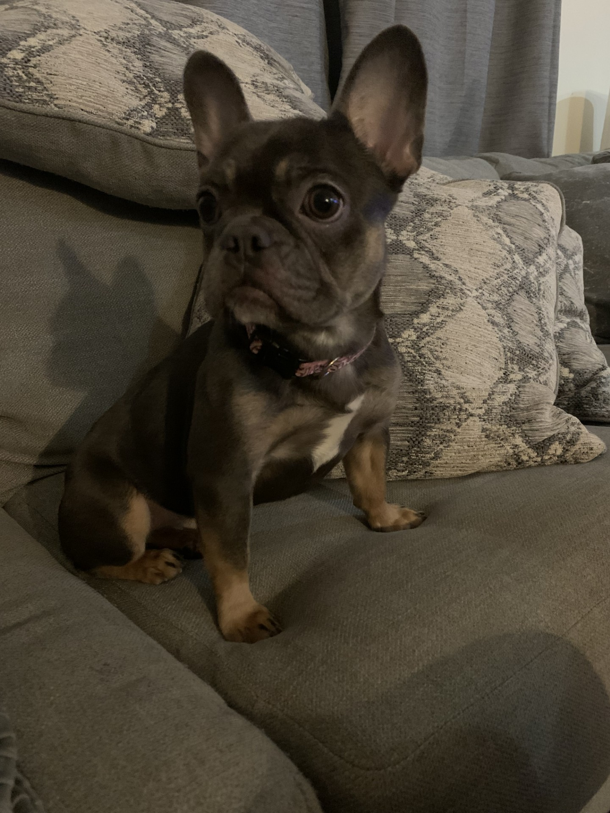
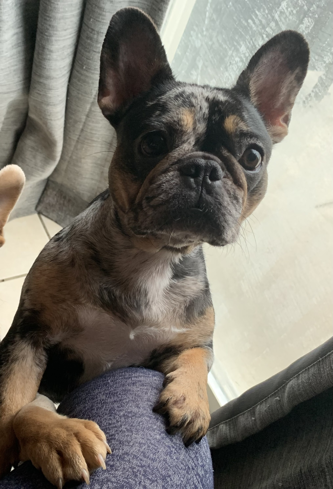
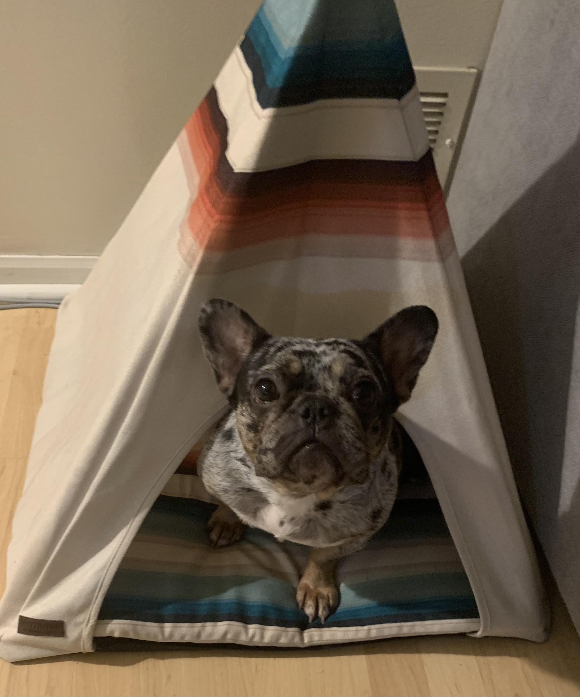

Dogs



Dog Names (Left to Right)
- Freya
- Oreo
- Miya
Dogs have always been apart of my life. Currently, my family and I have 3 French bulldogs. Oreo and Miya are sisters and Freya is Oreo’s daughter. These ladies make life less boring with their snorts, goofy looks, and crazy play. They all love to cuddle and get all the pets they can. A few years back we built a fence so the dogs could run around freely. One of our neighbors has dogs as well and our dogs can no longer see them easily. So, these three Frenchie’s go and stand up against the fence and peep through the fence gaps to see and bark hello. It is the funniest thing and I call them “Peeping Frenchie’s” when they do this. They are a bunch of goofballs, and we love them very much!